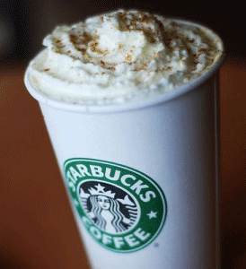
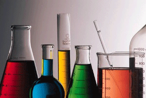

Are Pumpkin Lates Gluten Free?
By Hillary Cohen | Posted: Fabruary 21, 2014
Pumpkin is popping up everywhere you look as we head into the time of year when it seems the perfect flavor for the season.
And that means our attention and our taste buds are turning to pumpkin spice lattes.
On the gluten-free diet, these aromatic drinks present challenges because none of the three big national chains that brew the lattes will say their concoctions are safe.
Starbucks, the category leader, has sold 200 million pumpkin lattes in a decade. A company spokesperson said the drink does not contain any ingredients intentionally made with gluten. However, she notes that ingredients might be made on equipment that also processes products that do contain gluten. In addition, Starbucks does not claim any of its beverages are gluten free because the company uses shared equipment and handles gluten in its stores.
Although the pumpkin spice sauce and pumpkin spice topping are not made with gluten-containing ingredients, they are are not certified gluten free, according to the spokesperson. “It is our company policy to go out for third party certification should we wish to claim gluten-free on any of our products,” she said.
Starbucks has taken this position for a few years now, after a short-lived period of trying to meet gluten-free needs, most notably by introducing and quickly pulling a gluten-free orange cake. I’ve always found this turn-around and Starbucks’ statements confusing. In other countries, the company is much better at serving its gluten-free customers. In the United Kingdom, for example, you can find gluten-free sandwiches in the refrigerator case.
But what to do about the latte? Some gluten-free consumers ask the barista to clean out the containers used to make the drink and feel safer about the cross-contamination issues. Others would never give in to the latte urge no matter how strong it gets as fall settles in. It can be a matter of concern about some gluten content or a philosophical stand against a policy that’s gluten insensitive – or both.
New gluten-free label rules and testing in 2014
By Jhon Mayer | Posted: Fabruary 22, 2014
 New gluten-free labeling rules do not require food makers to test their products to prove they meet the requirements set testing equipmentby the U.S. Food and Drug Administration.
But the FDA will test products labeled “gluten free” to a standard of 20 parts per million of gluten to assure companies are complying with the new rules, which go into effect one year from now.
If a product labeled “gluten free” is tested by the FDA and found to contain 20 ppm of gluten or more, the food will be considered misbranded. The FDA says it will “use gluten testing of samples when needed.” A consumer complaint about a food is one reason testing might be used.
The FDA will also enforce the regulations through “periodic inspections of food manufacturing facilities; food label reviews; follow-up on consumer and industry complaints reported to the agency.”
Under the new gluten-free labeling rules, companies can use a variety of quality control methods to make sure they are meeting the 20 ppm standard. They can voluntarily do in-house testing of ingredients or final food products; have an independent company do in-house testing at their facility; get gluten-free analysis of ingredients from suppliers; and get gluten-free certification of their final product from an outside group.
Once the rules go into effect it will no longer be enough for a gluten-free food maker to use gluten-free ingredients. Companies will also have to account for any cross-contamination in their products that might occur anywhere from the field, to the factory, to the packaging plant.
For certain categories of processed food, companies that choose not to test could run the risk of going over the 20 ppm cutoff so there is incentive for voluntary testing. Many companies started voluntarily testing their products or getting outside certification even before final rules were approved on Aug. 2.
Naturally gluten-free foods such as plain, packaged vegetables and fruits that use a gluten-free label would have less need to test their products since there is less risk of cross-contamination. Naturally gluten-free grains, on the other hand, would have a higher risk of cross-contamination while being transported, milled and packaged.
The FDA does not require companies to use specific tests to determine gluten levels, but does recommend scientifically validated methods appropriate for the type of food being tested.
If the FDA investigates a food labeled “gluten free” to make sure it is following the rule, it will use two very specific ELISA methods that have been scientifically validated.
One wrinkle regarding testing stems from the difficulty getting accurate results when a food contains a wheat or barley based ingredient that is hydrolyzed or fermented. The gluten protein in these ingredients is broken into fragments that are not picked up by the validated tests.
A “gluten free” claim will be permitted on fermented and hydrolyzed foods or foods containing fermented or hydrolyzed ingredients that meet all of the requirements for bearing a “gluten-free” claim even though the gluten content of the food cannot be reliably measured, according to the FDA.
The agency intends to finalize a rule dealing with fermented and hydrolyzed foods and ingredients before the gluten-free standard goes into effect next year, according to an FDA spokesperson. If that does not happen, the FDA will draft a guidance document for food companies. The first step in the process, publication of a proposed rule, should happen “shortly,” according to the FDA.
“Until we establish provisions specifically for these foods … manufacturers of fermented or hydrolyzed foods or foods that use fermented or hydrolyzed ingredients are responsible for ensuring that the food bearing a “gluten-free” claim is not misbranded for failure to meet all of the requirements of the final rule,” the FDA says in the official Federal Register notice detailing the new labeling rules.
The FDA’s decision to create a separate rule for hydrolyzed and fermented products is causing confusion about how they will be handled until the rule is final.